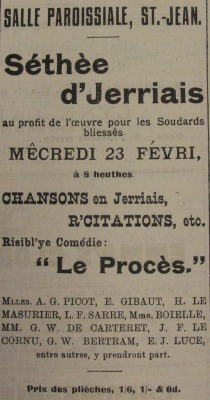

Quand j'dit a nos gens qu'Elie nos invitait tous a la séthée d'St. Jean, y'eut d'la jouée. Lonôre m'sautit au co; Laïzé m'print a sa brachie; Samuel mé dounni sa bounne pipe en èstcheumme. Laïzé - eunne fais n'est pas couôtume - nos alloui tchiq' chose de caud; et quand j'proposi la santé a Elie, ch'fut Lonôre qu'entounni "For ees a jolli good feller!"
I' vintes nos cherchi dans un moto, si vos pliait! Laïzé aheucti un mio d'vant qu'd'engambé. "Ch'est ti seuthtablye, chès machines là!" qu'ou s'fit, en r'tchullant. "Si l'affaithe prennait à feu? Y'a dêja d'la feummée qui sort de d'souôs l'êsseu!" J'finnimes par la rasseuthé en lis disant qu'jammais n'y'a d'accident quand nou viage pour la Red Cross, et en l'heu, en s'mettant d'biais, en long, en travers, et l's uns sus l's'autres, nos v'la dans l'tchéthiot. Y'avait l'cacheux et sa femme sus le d'vant; tandi qu'en driéthe j'taimes bigbichis a n'pon r'counaître san propre bras d'avec le sien du vaîsin. Et pardessus tout cheunna, nou trouvi l'Caouin en c'min, a s'frotté l'bec contre eunne branque de lièru. Nou l'jutchi sus l'"wind-screen" viyant qu'il a d's yeux a vaie clié la niet; i' faisait des signaux aves ses ailles suivant qu'i' fallait gouvèrné a wog ou a bidéouais.
Tchi fliotchet d'monde dans la Salle! Pas eunne tchaise viedde, et du monde plien l'allée et l'portico. Pour accomdé tant qu'possiblye, j'm'assit sus les g'nors a Laïzé et j'prîns Lonôre sus m's èspaules. Ch'tait pas ch'qui y'a d'pus comfortablye, mais, pour eunne fais! Laïzé s'pliaignit d'temps en temps qu'ou n'sentait pas ses gambes, mais j'lis dit d'avé a enduthé, que ch'tait pour la Red Cross - a vrai dithe, oul a cliopinné hardi d'pis: j'lis frotte chounna ov des ortchies; sa pé r'quémanche a r'véné rouoge.
La Séthée fut un grand succés. Ch'la, ch'est d'la poésie. V'la tchi m'vint d'même, sans y pensé. Ch'est un don! et si tchiq'un voulait des versets pour met' sus un tombé - tchiq chose tout a fait hort du coummun - en m'en pâslant en temps, j'pouorais vos assemblié tchiq' chose a faithe fremi.
Mais j'taîmes a un concert; pâslons du concert. La prémié chanson; ch'fut Moussieu Bertram qui la chanti. I' nos dit coumme tchi y'a d'bouan cidre siez ses gens, et coumme nous en bé a plienne modjies a touous les r'pas; v'la tchi m'dounni eunne sé! J'fûmes pus qu'èstounnes d'oué E.J. Luce et eunne jeunne demouèzelle s'ent' rouâblié a propos d'lus fils qu'est navigant. Nou n'devthait pas permettre ès gens d's'exposé d'même en publyi; chès choses ls n'sé disent pon. M'èstounne pas qu'la pouôre fille s'èsgouffisse a plieuthé en s'muchant la fache.
Moussieu d'Cartheret nos fit teurtre d'rithe avec l'histouethe de coumment s'y print sa pathente pour gaffé un gallant. Lonôre èscoutait de toutes ses ouothelles et prennait des notes avec un crayon sus eunne fiélle de papi - oul a p't'être idée d's'èsprouvé d'la même monniethe, j'n'en s'ais pas ravi - et, pus tard, quand la p'tite demouezelle (je n'mé r'souvains pas d'sen nom; ch'est la sienne qu'a eunne belle pétite rouoge bouoche en tcheur) nos chanti qu'ou disait tréjous "O nennin j'ja" toutes les fais qu'nou lis disait "Will you be mine?" Lonôre disait que ch'tait eunne p'tite pie qui mèthitait d'résté a paître ès coucous.
Mais je n'peux vos en dithe la maintchi d'la bouonne séthée que j'eûmes; les gazettes vos en ont dit l'pus bé. Quand ch'fut fini, et qu'Madame Avérti nos eut chanté "L'bouan vièrs temps" - entre-nous, oul eut bieau s'dèsdjîsé avec un bonnet, nou viyait bin qu'oul 'tait trop fraiche pour avé veu cheunna - et qu'j'eûmes tous chanté dans l'chorus que tout en sounnait - j'fûmes invîtés a prendre eunne bouochie dans l'office au Counnèstablye. Et pis, "All aboard!" Nou se r'patchi d'san mus dans d'moto, la tête en haut autant qu'possiblye, et cache pour siez nous! N'y'eut persounne d'èstouffé, Dieu merci, mais l'bonnet a Laïzé fut èsgliémmi coumme eunne crêpe, et Lonôre n'a pon r'veu des djéstiethes.
Nou m'dit qu'y'a d'aut' paraisses qui pâslent d'avé eunne télle séthée d'Jerriais, au pus tôt. M'èstounne pon! Si St. Jean peut emplyi sa Salle par dessus bord et baté par un temps coumme i' fit, pourtchi qu'd'autres n'en f'thaient pon autant? Mais m'est avis qu'ch'est a condition d'avé a bin près les mêmes acteurs - Jock Luce, Moussieu d'Cartheret, la bouoche en tcheur, la p'tite Miss Sarre, la sienne qui chanti si bin "Tipperari!" et quazi tous, en fin d'compte. Et pourtchi pas eunne séthée en ville, mé dithous? I'm be dam, j'sis prèe a gagi qu'y'éthait un peuplye! P't'être même ué Laïzé consentithait a lus prêté Lonôre; s'ou la ouiaites frédounné des cantiques en s'couochant!
Piteur Pain
Viyiz étout: